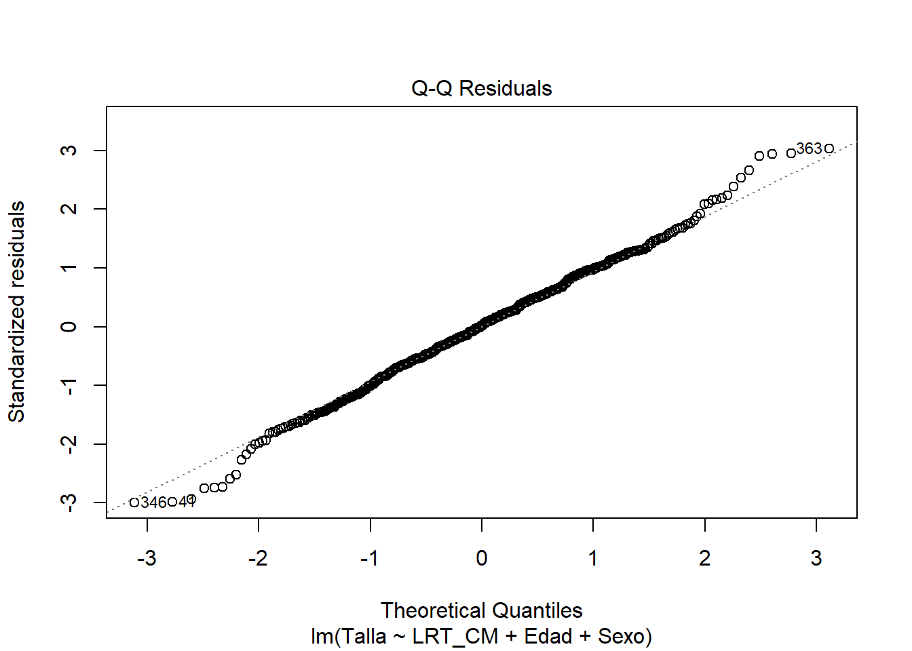
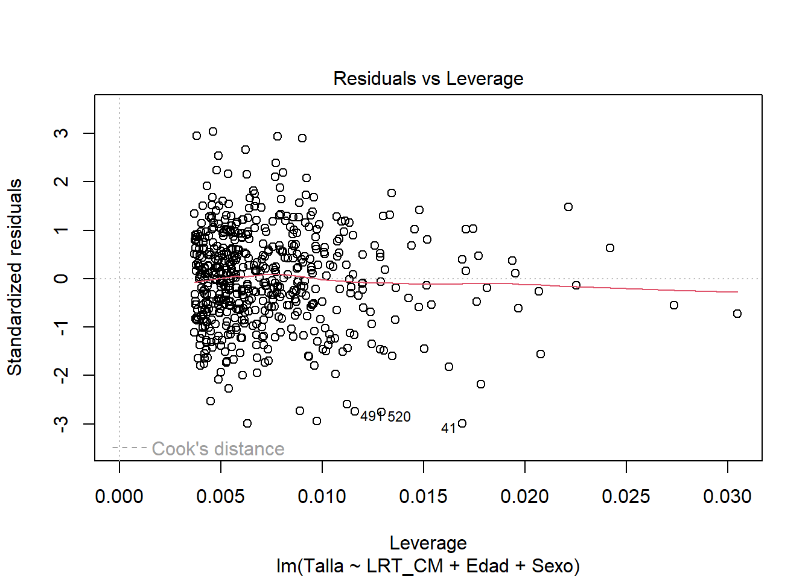
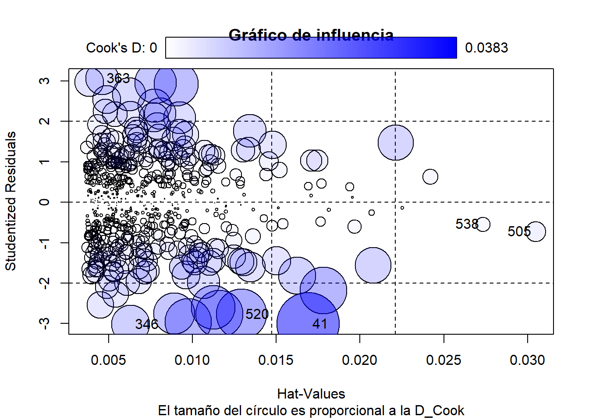
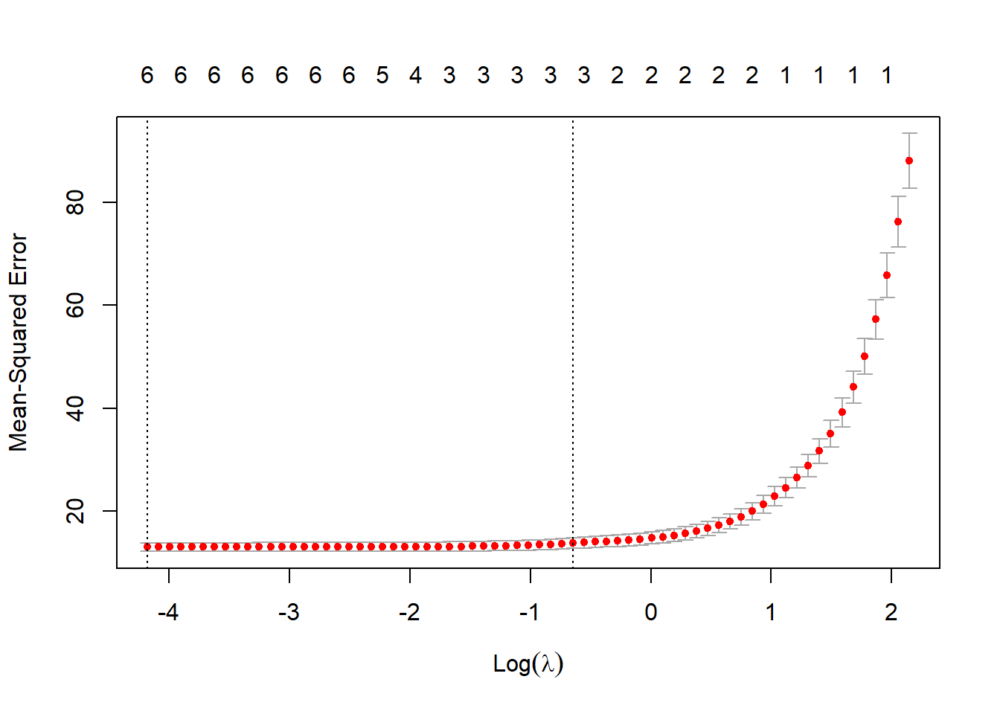

Subset selection object
Call: regsubsets.formula(Talla ~ LRT_A + Peso + Edad + Sexo + Etnia +
Programa, datos, nbest = 1, nvmax = 10)
8 Variables (and intercept)
Forced in Forced out
LRT_A FALSE FALSE
Peso FALSE FALSE
Edad FALSE FALSE
SexoMasculino FALSE FALSE
EtniaBlanco-Mestizo FALSE FALSE
EtniaIndigena FALSE FALSE
EtniaRrom FALSE FALSE
ProgramaComunidad de Cuidado FALSE FALSE
1 subsets of each size up to 8
Selection Algorithm: exhaustive
LRT_A Peso Edad SexoMasculino EtniaBlanco-Mestizo EtniaIndigena
1 ( 1 ) "*" " " " " " " " " " "
2 ( 1 ) "*" " " " " "*" " " " "
3 ( 1 ) "*" " " "*" "*" " " " "
4 ( 1 ) "*" "*" "*" "*" " " " "
5 ( 1 ) "*" " " "*" "*" "*" "*"
6 ( 1 ) "*" " " "*" "*" "*" "*"
7 ( 1 ) "*" "*" "*" "*" "*" "*"
8 ( 1 ) "*" "*" "*" "*" "*" "*"
EtniaRrom ProgramaComunidad de Cuidado
1 ( 1 ) " " " "
2 ( 1 ) " " " "
3 ( 1 ) " " " "
4 ( 1 ) " " " "
5 ( 1 ) " " " "
6 ( 1 ) "*" " "
7 ( 1 ) "*" " "
8 ( 1 ) "*" "*" Modelos
A continuación el resumen de la evaluación de las hipótesis de interés:
- La diferencia en las mediciones de LRT con antropómetro y con cinta métrica resultó ser estadísticamente significativa.
- La diferencia en las mediciones de LRM con la pierna a \(90°\) y la pierna estirada resultó ser estadísticamente significativa.
Estos resultados sigieren que:
- No es posible determinar que las mediciones de LRT con la cinta métrica sean iguales a las obtenidas con antropómetro. Asumiendo que la medición con antropómetro es más exacta, las mediciones con la cinta métrica suelen sobreestimar en promedio a las del antropómetro.
- Tampoco es posible determinar que las mediciones de LRM con la pierna a \(90°\) y con la pierna estirada sean iguales. La medición con la pierna estirada suele ser en promedio menor a la medición hecha con la pierna a \(90°\).
Los resultados obtenidos al evaluar las fórmulas de Benjumea y de Arango y Zamora en muestra de adultos mayores que atiende la SDIS, parecen no tener muy buenos resultados a la hora de estimar la talla de los adultos mayores.
Dado estos resultados, se concluye que se requiere de fórmulas específicas para la población que atiende la SDIS. Además, se deberá ajustar estos modelos para las cuatro mediciones pues la evaluación de las hipótesis no dieron indicios de la igualdad entre los métodos de las mediciones.
Selección del mejor modelo usando LRT_A
Inicialmente, se hará la selección del mejor modelo para LRT_A mediante un enfoque predictivo.
A continuación se hace una búsqueda del mejor modelo por cada número de posibles combinaciones de variables. Primero se hará la búsqueda usando todo el conjunto de datos.
\(R^2\), \(R^2\) ajustado, SCE, y BIC para cada mejor modelo del correspondiente tamaño:
[1] 0.8686814 0.8789431 0.8862590 0.8865490 0.8869361 0.8873216 0.8875270
[8] 0.8875271[1] 0.8684386 0.8784947 0.8856260 0.8857055 0.8858834 0.8860602 0.8860554
[8] 0.8858421[1] 6398.986 5898.947 5542.449 5528.321 5509.455 5490.674 5480.665 5480.657[1] -1089.766 -1127.650 -1155.202 -1150.291 -1145.850 -1141.407 -1136.101
[8] -1129.804Usando el criterio BIC, el mejor modelo es el de 3 variables:
[1] 3Usando el \(R^2\) ajustado, se sugiere un modelo con 5 variables:

Los coeficientes del mejor modelo usando el criterio de BIC son:
(Intercept) LRT_A Edad SexoMasculino
59.1083106 2.1894102 -0.1216628 3.0653353 Esto sugiere usar el modelo \(Talla = 58.67 + 2.19 LRT\_A - 0.12Edad + 3.06Sexo\),
\[Sexo = \begin{cases} 1 & \text{si sexo = hombre} \\ 0 & \text{si sexo = mujer} \end{cases}\]
Ahora se hará la búsqueda del mejor modelo usando K - fold cross validation con el fin de calcular directamente los errores de predicción sobre los datos de testeo y evitar así el sobreajuste.
- Se crean K - folds (pliegues) de aproximadamente igual tamaño. En este caso fijamos \(k = 10\). Como tenemos \(558\) datos, cada pliegue será de tamaño 55 o 56.
- El \(k-ésimo\) pliegue servirá para testear, y los demás pliegues se juntan para entrenar los modelos. Osea que se usará un \(90\%\) de los datos para entrenamiento y \(10\%\) para test.
- Para \(k = 1,\cdots,10,\) se hace la búsqueda del mejor modelo para cada número de variables y se calcula el MSE.
- Luego, se promedia el MSE a través de los \(10\) pliegues y se escoge el tamaño de modelo con menor MSE promedio.
- Finalmente, se hace la búsqueda del mejor modelo por cada número de variables usando todos los datos disponibles y se escoge el modelo asociado al tamaño del modelo obtenido en la validación cruzada.
Tamaño de los pliegues:
folds
1 2 3 4 5 6 7 8 9 10
55 55 55 54 54 54 54 54 54 54 MSE promedio a través de los \(10\) pliegues para cada número de variables incluídas en el modelo:
Reordering variables and trying again: 1 2 3 4 5 6 7
11.88403 11.00914 10.39225 10.47051 10.55927 10.61288 10.55258 El MSE se minimiza usando un modelo de 3 variables:

Se busca nuevamente el mejor modelo de tres variables usando todos los datos:
[1] -1089.766 -1127.650 -1155.202 -1150.291 -1145.850 -1141.407 -1136.101
[8] -1129.804 (Intercept) LRT_A Edad SexoMasculino
59.1083106 2.1894102 -0.1216628 3.0653353 Casualmente volvió a dar el mismo modelo con tres variables que incluye LRT_A, la Edad y el Sexo. Esto es seguramente porque las demás variables no contribuyen significativamente a la presición predictiva de los modelos.
Ahora se validarán los supuestos para el mejor modelo obtenido:
Call:
lm(formula = Talla ~ LRT_A + Edad + Sexo, data = datos)
Residuals:
Min 1Q Median 3Q Max
-10.4374 -2.0311 0.1058 2.2783 9.2680
Coefficients:
Estimate Std. Error t value Pr(>|t|)
(Intercept) 59.10831 2.90260 20.364 < 2e-16 ***
LRT_A 2.18941 0.05360 40.848 < 2e-16 ***
Edad -0.12166 0.02066 -5.888 6.88e-09 ***
SexoMasculino 3.06534 0.38877 7.885 1.76e-14 ***
---
Signif. codes: 0 '***' 0.001 '**' 0.01 '*' 0.05 '.' 0.1 ' ' 1
Residual standard error: 3.207 on 539 degrees of freedom
Multiple R-squared: 0.8863, Adjusted R-squared: 0.8856
F-statistic: 1400 on 3 and 539 DF, p-value: < 2.2e-16El modelo tiene un \(R^2\) ajustado de \(0.8861\), es decir que aproximadamente un \(88.61\%\) de la variabilidad de la talla es explicada por LRT_A, la edad y el sexo.
Linealidad: Con el fin de verificar que la relación entre la talla y las variables LRT_A (discriminando por sexo) y la edad es lineal, se visualiza el gráfico de los residuos vs los valores predichos del modelo \(\left(\hat{e},\hat{y} \right)\):
El gráfico no muestra ningún patrón marcado, la ubicación de los puntos parece ser aleatoria alrededor de cero, indicando también homoscedasticidad en los residuales y posible independencia de los mismos. El gráfico muestra algunos valores atípicos que valdría la pena explorar.
Independencia de los errores: Aunque nuestros datos no son temporales, el test de Durbin-Watson nos puede ayudar a evaluar la autocorrelación de los errores del modelo:
Durbin-Watson test
data: reg
DW = 2.0507, p-value = 0.7173
alternative hypothesis: true autocorrelation is greater than 0La estadística del test de Durbin-Watson es muy cercano a \(2\), se concluye que los errores son independientes.
Normalidad de los errores: Se realiza el gráfico QQ-plot para comparar la distribución de los residuales del modelo con la distribución teórica de una normal. También se hace el test de normalidad de Lilliefors y Anderson-Darling:

Lilliefors (Kolmogorov-Smirnov) normality test
data: reg$residuals
D = 0.02184, p-value = 0.7651
Anderson-Darling normality test
data: reg$residuals
A = 0.41295, p-value = 0.337El QQ-plot muestra que los residuales se ajustan aceptablemente a una distribución normal. Las pruebas de normalidad de Lilliefors y Anderson-Darling también apoyan este resultado.
Homoscedasticidad: Aunque no se vio un patron que indicara heteroscedasticidad en el gráfico de los residuales vs los valores predichos, a continuación se muestra el gráfico de los residuales estandarizados vs los valores predichos con el fin de mejorar la interpretabilidad de la homoscedasticidad y tener una visión más clara de las observaciones atípicas e influyentes:

No se observan patrones que indiquen hereroscedasticidad en los residuos (forma de cono o embudo). Se siguien observando algunas observaciones atípicas y/o influyentes.
Adicional, se realiza la prueba de Breusch-Pagan para verificar la homoscedasticidad de los residuales:
studentized Breusch-Pagan test
data: reg
BP = 0.8348, df = 3, p-value = 0.8411No se rechaza la hipótesis nula de que los errores del modelo son homoscedasticos.
Multicolinealidad: Se verifica que las variables incluídas en el modelo no están altamente correlacionadas entre sí, y así evitar obtener resultados inestables que dificulten la interpretabilidad de los coeficientes del modelo. Se calculan los Factores de Inflación de la Varianza (VIFs):
LRT_A Edad Sexo
1.942637 1.038371 1.995345 Dado que los VIFs son mucho menores a 5, esto indica que cada variable tiene una correlación moderada (leve) con las demás. Por lo que se puede concluir que los resultados del modelo posiblemente no estarán muy afectados por la multicolinealidad.
El modelo está bien especificado: Se hace el test de RESET para examinar si el modelo ajustado está bien especificado o si se han omitido términos no lineales o interacciones importantes:
RESET test
data: reg
RESET = 0.62101, df1 = 4, df2 = 535, p-value = 0.6477
RESET test
data: reg
RESET = 0.98691, df1 = 2, df2 = 537, p-value = 0.3734No se rechaza la hipótesis nula de que el modelo está bien especificado.
Obervaciones atípicas y de alto apalancamiento:

Usando los residuales estudentizados, se observan \(5\) datos atípicos.

StudRes Hat CookD
41 -2.9464281 0.01514476 0.032906079
505 -0.6485772 0.03066342 0.003330247
520 -3.3029648 0.01104953 0.029923010
538 -0.8302135 0.02463562 0.004354784En total 29 observaciones superan el umbral especificado para la distancia de Cook, pero esto no significa que todas sean influyentes (alto leverage). Particularmente hay 3 observaciones que son marcadas como influyentes significativamente según la distancia de Cook. Esto indica que la inclusión de estas observaciones en el modelo pueden tener una influencia significativa en los coeficientes del modelo y en la predicción de la talla. Se debe explorar con cautela estas observaciones y decidir qué hacer con ellas.
Para esto, se puede comprobar el cambio en los coeficientes del modelo al excluir estas observaciones influyentes.
Call:
lm(formula = Talla ~ LRT_A + Edad + Sexo, data = datos, subset = {
setdiff(row(datos)[, 1], c(533, 43, 549))
})
Residuals:
Min 1Q Median 3Q Max
-10.4573 -2.0353 0.1184 2.2692 9.2417
Coefficients:
Estimate Std. Error t value Pr(>|t|)
(Intercept) 59.22121 2.91027 20.349 < 2e-16 ***
LRT_A 2.18636 0.05401 40.477 < 2e-16 ***
Edad -0.12112 0.02073 -5.843 8.88e-09 ***
SexoMasculino 3.07005 0.38910 7.890 1.70e-14 ***
---
Signif. codes: 0 '***' 0.001 '**' 0.01 '*' 0.05 '.' 0.1 ' ' 1
Residual standard error: 3.208 on 537 degrees of freedom
Multiple R-squared: 0.8846, Adjusted R-squared: 0.8839
F-statistic: 1372 on 3 and 537 DF, p-value: < 2.2e-16Las estimaciones de los coeficientes del modelo sin las obervaciones influyentes han cambiado un poco respecto al modelo original. El \(R^2\) ajustado ha incrementado un poco también.
Modelo normal
LRT Antropómetro
A continuación se hace una búsqueda del mejor modelo por cada número de posibles combinaciones de variables de las cuales se tenga evidencia que influyen en la talla de adultos mayores. Primero se hará la búsqueda usando todo el conjunto de datos.
Subset selection object
Call: regsubsets.formula(Talla ~ LRT_A + Edad + Sexo + Etnia, datos,
nbest = 1, nvmax = 10)
6 Variables (and intercept)
Forced in Forced out
LRT_A FALSE FALSE
Edad FALSE FALSE
SexoMasculino FALSE FALSE
EtniaBlanco-Mestizo FALSE FALSE
EtniaIndigena FALSE FALSE
EtniaRrom FALSE FALSE
1 subsets of each size up to 6
Selection Algorithm: exhaustive
LRT_A Edad SexoMasculino EtniaBlanco-Mestizo EtniaIndigena EtniaRrom
1 ( 1 ) "*" " " " " " " " " " "
2 ( 1 ) "*" " " "*" " " " " " "
3 ( 1 ) "*" "*" "*" " " " " " "
4 ( 1 ) "*" "*" "*" " " "*" " "
5 ( 1 ) "*" "*" "*" "*" "*" " "
6 ( 1 ) "*" "*" "*" "*" "*" "*" \(R^2\), \(R^2\) ajustado, SCE, y BIC para cada mejor modelo del correspondiente tamaño:
[1] 0.8686814 0.8789431 0.8862590 0.8863940 0.8869361 0.8873216[1] 0.8684386 0.8784947 0.8856260 0.8855493 0.8858834 0.8860602[1] 6398.986 5898.947 5542.449 5535.875 5509.455 5490.674[1] -1089.766 -1127.650 -1155.202 -1149.550 -1145.850 -1141.407Usando el criterio BIC, el mejor modelo es el de 3 variables:
[1] 3

Los coeficientes del mejor modelo usando el criterio de BIC son:
(Intercept) LRT_A Edad SexoMasculino
59.1083106 2.1894102 -0.1216628 3.0653353 Esto sugiere usar el modelo \(Talla = 58.67 + 2.19 LRT\_A - 0.12Edad + 3.06Sexo\),
\[Sexo = \begin{cases} 1 & \text{si sexo = hombre} \\ 0 & \text{si sexo = mujer} \end{cases}\]
Ahora se hará la búsqueda del mejor modelo usando K - fold cross validation con el fin de calcular directamente los errores de predicción sobre los datos de testeo y evitar así el sobreajuste.
- Se crean K - folds (pliegues) de aproximadamente igual tamaño. En este caso fijamos \(k = 10\). Como tenemos \(558\) datos, cada pliegue será de tamaño 55 o 56.
- El \(k-ésimo\) pliegue servirá para testear, y los demás pliegues se juntan para entrenar los modelos. Osea que se usará un \(90\%\) de los datos para entrenamiento y \(10\%\) para test.
- Para \(k = 1,\cdots,10,\) se calcula el MSE.
- Luego, se promedia el MSE a través de los \(10\) pliegues y se obtiene el MSE promedio.
El MSE para el modelo de 3 variables (\(LRT\_A, Edad, Sexo\)) es:
[1] 10.39225Ahora se validarán los supuestos para el mejor modelo obtenido:
Call:
lm(formula = Talla ~ LRT_A + Edad + Sexo, data = datos)
Residuals:
Min 1Q Median 3Q Max
-10.4374 -2.0311 0.1058 2.2783 9.2680
Coefficients:
Estimate Std. Error t value Pr(>|t|)
(Intercept) 59.10831 2.90260 20.364 < 2e-16 ***
LRT_A 2.18941 0.05360 40.848 < 2e-16 ***
Edad -0.12166 0.02066 -5.888 6.88e-09 ***
SexoMasculino 3.06534 0.38877 7.885 1.76e-14 ***
---
Signif. codes: 0 '***' 0.001 '**' 0.01 '*' 0.05 '.' 0.1 ' ' 1
Residual standard error: 3.207 on 539 degrees of freedom
Multiple R-squared: 0.8863, Adjusted R-squared: 0.8856
F-statistic: 1400 on 3 and 539 DF, p-value: < 2.2e-16El modelo tiene un \(R^2\) ajustado de \(0.8861\), es decir que aproximadamente un \(88.61\%\) de la variabilidad de la talla es explicada por LRT_A, la edad y el sexo.
Linealidad: Con el fin de verificar que la relación entre la talla y las variables LRT_A (discriminando por sexo) y la edad es lineal, se visualiza el gráfico de los residuos vs los valores predichos del modelo \(\left(\hat{e},\hat{y} \right)\):

El gráfico no muestra ningún patrón marcado, la ubicación de los puntos parece ser aleatoria alrededor de cero, indicando también homoscedasticidad en los residuales y posible independencia de los mismos. El gráfico muestra algunos valores atípicos que valdría la pena explorar.
Independencia de los errores: Aunque nuestros datos no son temporales, el test de Durbin-Watson nos puede ayudar a evaluar la autocorrelación de los errores del modelo:
Durbin-Watson test
data: reg
DW = 2.0507, p-value = 0.7173
alternative hypothesis: true autocorrelation is greater than 0La estadística del test de Durbin-Watson es muy cercano a \(2\), se concluye que los errores son independientes.
Normalidad de los errores: Se realiza el gráfico QQ-plot para comparar la distribución de los residuales del modelo con la distribución teórica de una normal. También se hace el test de normalidad de Lilliefors y Anderson-Darling:

Lilliefors (Kolmogorov-Smirnov) normality test
data: reg$residuals
D = 0.02184, p-value = 0.7651
Anderson-Darling normality test
data: reg$residuals
A = 0.41295, p-value = 0.337El QQ-plot muestra que los residuales se ajustan aceptablemente a una distribución normal. Las pruebas de normalidad de Lilliefors y Anderson-Darling también apoyan este resultado.
Homoscedasticidad: Aunque no se vio un patron que indicara heteroscedasticidad en el gráfico de los residuales vs los valores predichos, a continuación se muestra el gráfico de los residuales estandarizados vs los valores predichos con el fin de mejorar la interpretabilidad de la homoscedasticidad y tener una visión más clara de las observaciones atípicas e influyentes:

No se observan patrones que indiquen hereroscedasticidad en los residuos (forma de cono o embudo). Se siguien observando algunas observaciones atípicas y/o influyentes.
Adicional, se realiza la prueba de Breusch-Pagan para verificar la homoscedasticidad de los residuales:
studentized Breusch-Pagan test
data: reg
BP = 0.8348, df = 3, p-value = 0.8411No se rechaza la hipótesis nula de que los errores del modelo son homoscedasticos.
Multicolinealidad: Se verifica que las variables incluídas en el modelo no están altamente correlacionadas entre sí, y así evitar obtener resultados inestables que dificulten la interpretabilidad de los coeficientes del modelo. Se calculan los Factores de Inflación de la Varianza (VIFs):
LRT_A Edad Sexo
1.942637 1.038371 1.995345 Dado que los VIFs son mucho menores a 5, esto indica que cada variable tiene una correlación moderada (leve) con las demás. Por lo que se puede concluir que los resultados del modelo posiblemente no estarán muy afectados por la multicolinealidad.
El modelo está bien especificado: Se hace el test de RESET para examinar si el modelo ajustado está bien especificado o si se han omitido términos no lineales o interacciones importantes:
RESET test
data: reg
RESET = 0.62101, df1 = 4, df2 = 535, p-value = 0.6477
RESET test
data: reg
RESET = 0.98691, df1 = 2, df2 = 537, p-value = 0.3734No se rechaza la hipótesis nula de que el modelo está bien especificado.
Observaciones atípicas y de alto apalancamiento:

Usando los residuales estudentizados, se observan \(5\) datos atípicos.


StudRes Hat CookD
41 -2.9464281 0.01514476 0.032906079
505 -0.6485772 0.03066342 0.003330247
520 -3.3029648 0.01104953 0.029923010
538 -0.8302135 0.02463562 0.004354784En total 29 observaciones superan el umbral especificado para la distancia de Cook, pero esto no significa que todas sean influyentes (alto leverage). Particularmente hay 3 observaciones que son marcadas como influyentes significativamente según la distancia de Cook. Esto indica que la inclusión de estas observaciones en el modelo pueden tener una influencia significativa en los coeficientes del modelo y en la predicción de la talla. Se debe explorar con cautela estas observaciones y decidir qué hacer con ellas.
Para esto, se puede comprobar el cambio en los coeficientes del modelo al excluir estas observaciones influyentes.
Call:
lm(formula = Talla ~ LRT_A + Edad + Sexo, data = datos, subset = {
setdiff(row(datos)[, 1], c(533, 43, 549))
})
Residuals:
Min 1Q Median 3Q Max
-10.4573 -2.0353 0.1184 2.2692 9.2417
Coefficients:
Estimate Std. Error t value Pr(>|t|)
(Intercept) 59.22121 2.91027 20.349 < 2e-16 ***
LRT_A 2.18636 0.05401 40.477 < 2e-16 ***
Edad -0.12112 0.02073 -5.843 8.88e-09 ***
SexoMasculino 3.07005 0.38910 7.890 1.70e-14 ***
---
Signif. codes: 0 '***' 0.001 '**' 0.01 '*' 0.05 '.' 0.1 ' ' 1
Residual standard error: 3.208 on 537 degrees of freedom
Multiple R-squared: 0.8846, Adjusted R-squared: 0.8839
F-statistic: 1372 on 3 and 537 DF, p-value: < 2.2e-16Las estimaciones de los coeficientes del modelo sin las obervaciones influyentes han cambiado un poco respecto al modelo original. El \(R^2\) ajustado ha incrementado un poco también.
LRT cinta métrica
A continuación se hace una búsqueda del mejor modelo por cada número de posibles combinaciones de variables de las cuales se tenga evidencia que influyen en la talla de adultos mayores, como medida, se usa la medición de la longitud rodilla-talón con cinta métrica. Primero se hará la búsqueda usando todo el conjunto de datos.
Subset selection object
Call: regsubsets.formula(Talla ~ LRT_CM + Edad + Sexo + Etnia, datos,
nbest = 1, nvmax = 10)
6 Variables (and intercept)
Forced in Forced out
LRT_CM FALSE FALSE
Edad FALSE FALSE
SexoMasculino FALSE FALSE
EtniaBlanco-Mestizo FALSE FALSE
EtniaIndigena FALSE FALSE
EtniaRrom FALSE FALSE
1 subsets of each size up to 6
Selection Algorithm: exhaustive
LRT_CM Edad SexoMasculino EtniaBlanco-Mestizo EtniaIndigena EtniaRrom
1 ( 1 ) "*" " " " " " " " " " "
2 ( 1 ) "*" " " "*" " " " " " "
3 ( 1 ) "*" "*" "*" " " " " " "
4 ( 1 ) "*" "*" "*" "*" " " " "
5 ( 1 ) "*" "*" "*" "*" "*" " "
6 ( 1 ) "*" "*" "*" "*" "*" "*" \(R^2\), \(R^2\) ajustado, SCE, y BIC para cada mejor modelo del correspondiente tamaño:
[1] 0.8406283 0.8622339 0.8703559 0.8704753 0.8710482 0.8711093[1] 0.8403337 0.8617236 0.8696344 0.8695123 0.8698475 0.8696665[1] 7765.975 6713.164 6317.387 6311.568 6283.655 6280.677[1] -984.6341 -1057.4421 -1084.1402 -1078.3435 -1074.4531 -1068.4135Usando el criterio BIC, el mejor modelo es el de 3 variables:
[1] 3
Los coeficientes del mejor modelo usando el criterio de BIC son:
(Intercept) LRT_CM Edad SexoMasculino
57.3048203 2.1612215 -0.1281442 4.1354010 Esto sugiere usar el modelo \(Talla = 57.25 + 2.16 LRT\_CM - 0.13 Edad + 4.25 Sexo\),
\[Sexo = \begin{cases} 1 & \text{si sexo = hombre} \\ 0 & \text{si sexo = mujer} \end{cases}\]
AAhora usamos nuevamente K - fold cross validation con el fin de calcular directamente los errores de predicción sobre los datos de testeo y evitar así el sobreajuste de la misma manera que se realizó para el modelo normal de \(LRT_A\).
El MSE para el modelo de 3 variables (\(LRT\_A, Edad, Sexo\)) es:
[1] 11.78225Ahora se validarán los supuestos para el mejor modelo obtenido:
Call:
lm(formula = Talla ~ LRT_CM + Edad + Sexo, data = datos)
Residuals:
Min 1Q Median 3Q Max
-10.2270 -2.1500 0.0739 2.1773 10.3679
Coefficients:
Estimate Std. Error t value Pr(>|t|)
(Intercept) 57.30482 3.19489 17.936 < 2e-16 ***
LRT_CM 2.16122 0.05781 37.386 < 2e-16 ***
Edad -0.12814 0.02205 -5.811 1.06e-08 ***
SexoMasculino 4.13540 0.40019 10.334 < 2e-16 ***
---
Signif. codes: 0 '***' 0.001 '**' 0.01 '*' 0.05 '.' 0.1 ' ' 1
Residual standard error: 3.424 on 539 degrees of freedom
Multiple R-squared: 0.8704, Adjusted R-squared: 0.8696
F-statistic: 1206 on 3 and 539 DF, p-value: < 2.2e-16El modelo tiene un \(R^2\) ajustado de \(0.8686\), es decir que aproximadamente un \(86.86\%\) de la variabilidad de la talla es explicada por el modelo.
Linealidad: Con el fin de verificar que la relación entre la talla y las variables LRT_CM, Sexo y Edad es lineal, se visualiza el gráfico de los residuos vs los valores predichos del modelo \(\left(\hat{y}, \hat{e} \right)\):
[1] "La media de los residuales es cercana a 0: "[1] -2.221117e-17
El gráfico no muestra ningún patrón marcado, la ubicación de los puntos parece ser aleatoria alrededor de cero, indicando también homoscedasticidad en los residuales y posible independencia de los mismos. El gráfico muestra 3 valores atípicos que valdría la pena explorar.
Independencia de los errores: Aunque nuestros datos no son temporales, el test de Durbin-Watson nos puede ayudar a evaluar la autocorrelación de los errores del modelo:
Durbin-Watson test
data: reg
DW = 2.0982, p-value = 0.8707
alternative hypothesis: true autocorrelation is greater than 0La estadística del test de Durbin-Watson es muy cercano a \(2\), se concluye que los errores son independientes.
Normalidad de los errores: Se realiza el gráfico QQ-plot para comparar la distribución de los residuales del modelo con la distribución teórica de una normal. También se hace el test de normalidad de Lilliefors y Anderson-Darling:

Lilliefors (Kolmogorov-Smirnov) normality test
data: reg$residuals
D = 0.023514, p-value = 0.66
Anderson-Darling normality test
data: reg$residuals
A = 0.35371, p-value = 0.4625El QQ-plot muestra que los residuales se ajustan aceptablemente a una distribución normal. Las pruebas de normalidad de Lilliefors y Anderson-Darling también apoyan este resultado.
Homoscedasticidad: Aunque no se vio un patron que indicara heteroscedasticidad en el gráfico de los residuales vs los valores predichos, a continuación se muestra el gráfico de los residuales estandarizados vs los valores predichos con el fin de mejorar la interpretabilidad de la homoscedasticidad y tener una visión más clara de las observaciones atípicas e influyentes:

No se observan patrones que indiquen hereroscedasticidad en los residuos (forma de cono o embudo). Se siguien observando algunas observaciones atípicas y/o influyentes.
Adicional, se realiza la prueba de Breusch-Pagan para verificar la homoscedasticidad de los residuales:
studentized Breusch-Pagan test
data: reg
BP = 4.524, df = 3, p-value = 0.2102No se rechaza la hipótesis nula de que los errores del modelo son homoscedasticos.
Multicolinealidad: Se verifica que las variables incluídas en el modelo no están altamente correlacionadas entre sí, y así evitar obtener resultados inestables que dificulten la interpretabilidad de los coeficientes del modelo. Se calculan los Factores de Inflación de la Varianza (VIFs):
LRT_CM Edad Sexo
1.805247 1.037625 1.854874 Dado que los VIFs son mucho menores a 5, esto indica que cada variable tiene una correlación moderada (leve) con las demás. Por lo que se puede concluir que los resultados del modelo posiblemente no estarán muy afectados por la multicolinealidad.
El modelo está bien especificado: Se hace el test de RESET para examinar si el modelo ajustado está bien especificado o si se han omitido términos no lineales o interacciones importantes:
RESET test
data: reg
RESET = 0.95259, df1 = 4, df2 = 535, p-value = 0.4332
RESET test
data: reg
RESET = 0.52406, df1 = 2, df2 = 537, p-value = 0.5924No se rechaza la hipótesis nula de que el modelo está bien especificado.
Observaciones atípicas y de alto apalancamiento:


Usando los residuales estudentizados, se observan \(5\) datos atípicos.


StudRes Hat CookD
41 -3.0080070 0.016908956 0.038333988
346 -3.0192135 0.006311404 0.014259783
363 3.0588792 0.004620190 0.010691877
505 -0.7271639 0.030472832 0.004158506
520 -2.7728983 0.012919280 0.024850615
538 -0.5481181 0.027348700 0.002114618En total 29 observaciones superan el umbral especificado para la distancia de Cook, pero esto no significa que todas sean influyentes (alto apalancamiento). Particularmente hay \(3\) observaciones que son marcadas como influyentes significativamente según la distancia de Cook (43, 504 y 533) . Esto indica que la inclusión de estas observaciones en el modelo pueden tener una influencia significativa en los coeficientes del modelo y en la predicción de la talla. Se debe explorar con cautela estas observaciones y decidir qué hacer con ellas.
Para esto, se puede comprobar el cambio en los coeficientes del modelo al excluir estas observaciones influyentes.
Call:
lm(formula = Talla ~ LRT_CM + Edad + Sexo, data = datos, subset = {
setdiff(row(datos)[, 1], c(533, 43, 504))
})
Residuals:
Min 1Q Median 3Q Max
-10.232 -2.158 0.065 2.165 10.364
Coefficients:
Estimate Std. Error t value Pr(>|t|)
(Intercept) 57.44618 3.20775 17.909 < 2e-16 ***
LRT_CM 2.15628 0.05825 37.017 < 2e-16 ***
Edad -0.12667 0.02215 -5.718 1.8e-08 ***
SexoMasculino 4.14110 0.40059 10.338 < 2e-16 ***
---
Signif. codes: 0 '***' 0.001 '**' 0.01 '*' 0.05 '.' 0.1 ' ' 1
Residual standard error: 3.426 on 536 degrees of freedom
Multiple R-squared: 0.8684, Adjusted R-squared: 0.8676
F-statistic: 1179 on 3 and 536 DF, p-value: < 2.2e-16Las estimaciones de los coeficientes del modelo sin las obervaciones influyentes han cambiado un poco respecto al modelo original. El \(R^2\) ajustado ha incrementado un poco también.
LRM pierna estirada
A continuación se hace una búsqueda del mejor modelo por cada número de posibles combinaciones de variables de las cuales se tenga evidencia que influyen en la talla de adultos mayores, solo se tiene en cuenta la medición de la longitud rodilla-maléolo con la pierna estirada. Primero se hará la búsqueda usando todo el conjunto de datos.
Subset selection object
Call: regsubsets.formula(Talla ~ LRM_R + Edad + Sexo + Etnia, datos,
nbest = 1, nvmax = 10)
6 Variables (and intercept)
Forced in Forced out
LRM_R FALSE FALSE
Edad FALSE FALSE
SexoMasculino FALSE FALSE
EtniaBlanco-Mestizo FALSE FALSE
EtniaIndigena FALSE FALSE
EtniaRrom FALSE FALSE
1 subsets of each size up to 6
Selection Algorithm: exhaustive
LRM_R Edad SexoMasculino EtniaBlanco-Mestizo EtniaIndigena EtniaRrom
1 ( 1 ) "*" " " " " " " " " " "
2 ( 1 ) "*" " " "*" " " " " " "
3 ( 1 ) "*" "*" "*" " " " " " "
4 ( 1 ) "*" "*" "*" " " " " "*"
5 ( 1 ) "*" "*" "*" "*" "*" " "
6 ( 1 ) "*" "*" "*" "*" "*" "*" \(R^2\), \(R^2\) ajustado, SCE, y BIC para cada mejor modelo del correspondiente tamaño:
[1] 0.8341945 0.8516241 0.8581963 0.8583950 0.8588665 0.8595238[1] 0.8338880 0.8510745 0.8574070 0.8573422 0.8575524 0.8579513[1] 8079.489 7230.166 6909.911 6900.229 6877.253 6845.224[1] -963.144 -1017.156 -1035.460 -1029.924 -1025.438 -1021.676Usando el criterio BIC, el mejor modelo es el de 3 variables:
[1] 3

Los coeficientes del mejor modelo usando el criterio de BIC son:
(Intercept) LRM_R Edad SexoMasculino
68.048537 2.217070 -0.115388 3.814406 Nuevamente se hará la búsqueda del mejor modelo usando K - fold cross validation con el fin de calcular directamente los errores de predicción sobre los datos de testeo y evitar así el sobreajuste.
El MSE para el modelo de 3 variables (\(LRT\_A, Edad, Sexo\)) es:
[1] 12.99465Ahora se validarán los supuestos para el mejor modelo obtenido:
Call:
lm(formula = Talla ~ LRM_R + Edad + Sexo, data = datos)
Residuals:
Min 1Q Median 3Q Max
-13.1766 -2.1806 0.0388 2.2805 10.1682
Coefficients:
Estimate Std. Error t value Pr(>|t|)
(Intercept) 68.04854 3.12423 21.781 < 2e-16 ***
LRM_R 2.21707 0.06317 35.095 < 2e-16 ***
Edad -0.11539 0.02309 -4.998 7.84e-07 ***
SexoMasculino 3.81441 0.42819 8.908 < 2e-16 ***
---
Signif. codes: 0 '***' 0.001 '**' 0.01 '*' 0.05 '.' 0.1 ' ' 1
Residual standard error: 3.58 on 539 degrees of freedom
Multiple R-squared: 0.8582, Adjusted R-squared: 0.8574
F-statistic: 1087 on 3 and 539 DF, p-value: < 2.2e-16El modelo propuesto parala medida Longitud Rodilla-Maleólo \((LRM_R)\) con la pierna estirada es:
\[Talla = 68.83 + 2.21 \, LRM_R - 0.12 \, Edad+ 3.87 \, Sexo \]
Según el \(R^2\) ajustado aproximadamente un \(85.81\%\) de la variabilidad de la talla es explicada por el modelo.
Linealidad: Con el fin de verificar que la relación entre la talla y las variables LRM_R (discriminando por sexo) y la edad es lineal, se visualiza el gráfico de los residuos vs los valores predichos del modelo \(\left(\hat{e},\hat{y} \right)\):

El gráfico no muestra ningún patrón marcado, la ubicación de los puntos parece ser aleatoria alrededor de cero, indicando también homoscedasticidad en los residuales y posible independencia de los mismos. El gráfico muestra algunos valores atípicos que valdría la pena explorar.
Independencia de los errores: Aunque nuestros datos no son temporales, el test de Durbin-Watson nos puede ayudar a evaluar la autocorrelación de los errores del modelo:
Durbin-Watson test
data: reg
DW = 1.907, p-value = 0.2713
alternative hypothesis: true autocorrelation is not 0La estadística del test de Durbin-Watson es muy cercano a \(2\), se concluye que los errores son independientes.
Normalidad de los errores: Se realiza el gráfico QQ-plot para comparar la distribución de los residuales del modelo con la distribución teórica de una normal. También se hace el test de normalidad de Lilliefors y Anderson-Darling:

Lilliefors (Kolmogorov-Smirnov) normality test
data: reg$residuals
D = 0.021779, p-value = 0.7687
Anderson-Darling normality test
data: reg$residuals
A = 0.30194, p-value = 0.5759El QQ-plot muestra que los residuales se ajustan aceptablemente a una distribución normal. Las pruebas de normalidad de Lilliefors y Anderson-Darling también apoyan este resultado.
Homoscedasticidad: Aunque no se vio un patron que indicara heteroscedasticidad en el gráfico de los residuales vs los valores predichos, a continuación se muestra el gráfico de los residuales estandarizados vs los valores predichos con el fin de mejorar la interpretabilidad de la homoscedasticidad y tener una visión más clara de las observaciones atípicas e influyentes:
No se observan patrones que indiquen hereroscedasticidad en los residuos (forma de cono o embudo). Se siguien observando algunas observaciones atípicas y/o influyentes.
Adicional, se realiza la prueba de Breusch-Pagan para verificar la homoscedasticidad de los residuales:
Breusch-Pagan test
data: reg
BP = 7.9093, df = 3, p-value = 0.04792Se rechaza la hipótesis nula de que los errores del modelo son homoscedasticos.
Multicolinealidad: Se verifica que las variables incluídas en el modelo no están altamente correlacionadas entre sí, y así evitar obtener resultados inestables que dificulten la interpretabilidad de los coeficientes del modelo. Se calculan los Factores de Inflación de la Varianza (VIFs):
LRM_R Edad Sexo
1.887057 1.039726 1.941441 Dado que los VIFs son mucho menores a 5, cada variable tiene una correlación moderada (leve) con las demás. Los resultados del modelo no deberían verse afectados por la multicolinealidad.
El modelo está bien especificado: Se hace el test de RESET para examinar si el modelo ajustado está bien especificado o si se han omitido términos no lineales o interacciones importantes:
RESET test
data: reg
RESET = 0.73773, df1 = 4, df2 = 535, p-value = 0.5665
RESET test
data: reg
RESET = 0.045213, df1 = 2, df2 = 537, p-value = 0.9558No se rechaza la hipótesis nula de que el modelo está bien especificado.
Observaciones atípicas y de alto apalancamiento:


Usando los residuales estudentizados, se observan \(5\) datos atípicos.

StudRes Hat CookD
505 0.1915271 0.033494744 0.0003183829
520 -3.7396744 0.008271635 0.0284752514
529 -3.4640045 0.009155150 0.0271633483
538 -0.2905027 0.030237545 0.0006589612En total 29 observaciones superan el umbral especificado para la distancia de Cook, pero esto no significa que todas sean influyentes (alto apalancamiento). Particularmente hay 3 observaciones que son marcadas como influyentes significativamente según la distancia de Cook (504, 533, 542). Esto indica que la inclusión de estas observaciones en el modelo pueden tener una influencia significativa en los coeficientes del modelo y en la predicción de la talla. Se debe explorar con cautela estas observaciones y decidir qué hacer con ellas.
Para esto, se puede comprobar el cambio en los coeficientes del modelo al excluir estas observaciones influyentes.
Call:
lm(formula = Talla ~ LRM_R + Edad + Sexo, data = datos, subset = {
setdiff(row(datos)[, 1], c(533, 542, 504))
})
Residuals:
Min 1Q Median 3Q Max
-13.226 -2.208 0.027 2.274 10.186
Coefficients:
Estimate Std. Error t value Pr(>|t|)
(Intercept) 68.82332 3.12440 22.028 < 2e-16 ***
LRM_R 2.20499 0.06321 34.884 < 2e-16 ***
Edad -0.11872 0.02306 -5.148 3.7e-07 ***
SexoMasculino 3.82495 0.42647 8.969 < 2e-16 ***
---
Signif. codes: 0 '***' 0.001 '**' 0.01 '*' 0.05 '.' 0.1 ' ' 1
Residual standard error: 3.564 on 536 degrees of freedom
Multiple R-squared: 0.8574, Adjusted R-squared: 0.8566
F-statistic: 1074 on 3 and 536 DF, p-value: < 2.2e-16Las estimaciones de los coeficientes del modelo sin las obervaciones influyentes han cambiado un poco respecto al modelo original. El \(R^2\) ajustado ha incrementado un poco también.
LRM pierna a 90°
Ahora, se hará una búsqueda del mejor modelo por cada número de posibles combinaciones de variables de las cuales se tenga evidencia que influyen en la talla de adultos mayores, únicamente se tiene en cuenta la longitud rodilla-malélo con la pierna a 90°. Primero se hará la búsqueda usando todo el conjunto de datos.
Subset selection object
Call: regsubsets.formula(Talla ~ LRM_90 + Edad + Sexo + Etnia, datos,
nbest = 1, nvmax = 10)
6 Variables (and intercept)
Forced in Forced out
LRM_90 FALSE FALSE
Edad FALSE FALSE
SexoMasculino FALSE FALSE
EtniaBlanco-Mestizo FALSE FALSE
EtniaIndigena FALSE FALSE
EtniaRrom FALSE FALSE
1 subsets of each size up to 6
Selection Algorithm: exhaustive
LRM_90 Edad SexoMasculino EtniaBlanco-Mestizo EtniaIndigena EtniaRrom
1 ( 1 ) "*" " " " " " " " " " "
2 ( 1 ) "*" " " "*" " " " " " "
3 ( 1 ) "*" "*" "*" " " " " " "
4 ( 1 ) "*" "*" "*" "*" " " " "
5 ( 1 ) "*" "*" "*" "*" " " "*"
6 ( 1 ) "*" "*" "*" "*" "*" "*" \(R^2\), \(R^2\) ajustado, SCE, y BIC para cada mejor modelo del correspondiente tamaño:
[1] 0.8177673 0.8498836 0.8568161 0.8569974 0.8571902 0.8574563[1] 0.8174305 0.8493276 0.8560191 0.8559342 0.8558605 0.8558607[1] 8879.962 7314.976 6977.167 6968.333 6958.938 6945.970[1] -911.8475 -1010.8238 -1030.2001 -1024.5910 -1019.0264 -1013.7421Usando el criterio BIC, el mejor modelo es el de 3 variables:
[1] 3
Los coeficientes del mejor modelo usando el criterio de BIC son:
(Intercept) LRM_90 Edad SexoMasculino
66.2016693 2.2163573 -0.1184789 4.8293028 Esto sugiere usar el modelo \(Talla = 69.33 + 2.12 LRM\_90 - 0.11 Edad + 5.18 Sexo\),
\[Sexo = \begin{cases} 1 & \text{si sexo = hombre} \\ 0 & \text{si sexo = mujer} \end{cases}\]
Ahora se hará la búsqueda del mejor modelo usando K - fold cross validation con el fin de calcular directamente los errores de predicción sobre los datos de testeo y evitar así el sobreajuste.
El MSE para el modelo de 3 variables (\(LRT\_A, Edad, Sexo\)) es:
[1] 13.08059Ahora se validarán los supuestos para el mejor modelo obtenido:
Call:
lm(formula = Talla ~ LRM_90 + Edad + Sexo, data = datos)
Residuals:
Min 1Q Median 3Q Max
-12.6469 -2.3083 0.0517 2.3260 9.4260
Coefficients:
Estimate Std. Error t value Pr(>|t|)
(Intercept) 66.20167 3.18952 20.756 < 2e-16 ***
LRM_90 2.21636 0.06360 34.851 < 2e-16 ***
Edad -0.11848 0.02319 -5.108 4.51e-07 ***
SexoMasculino 4.82930 0.41132 11.741 < 2e-16 ***
---
Signif. codes: 0 '***' 0.001 '**' 0.01 '*' 0.05 '.' 0.1 ' ' 1
Residual standard error: 3.598 on 539 degrees of freedom
Multiple R-squared: 0.8568, Adjusted R-squared: 0.856
F-statistic: 1075 on 3 and 539 DF, p-value: < 2.2e-16El \(R^2\) ajustado indica que aproximadamente un \(83.89\%\) de la variabilidad de la talla es explicada por LRT_CM, la edad y el sexo.
Linealidad: Con el fin de verificar que la relación entre la talla y las variables LRT_CM (discriminando por sexo) y la edad es lineal, se visualiza el gráfico de los residuos vs los valores predichos del modelo \(\left(\hat{e},\hat{y} \right)\):

El gráfico no muestra ningún patrón marcado, la ubicación de los puntos parece ser aleatoria alrededor de cero, indicando también homoscedasticidad en los residuales y posible independencia de los mismos. El gráfico muestra algunos valores atípicos que valdría la pena explorar.
Independencia de los errores: Aunque nuestros datos no son temporales, el test de Durbin-Watson nos puede ayudar a evaluar la autocorrelación de los errores del modelo:
Durbin-Watson test
data: reg
DW = 2.0296, p-value = 0.7428
alternative hypothesis: true autocorrelation is not 0La estadística del test de Durbin-Watson es muy cercano a \(2\), se concluye que los errores son independientes.
Normalidad de los errores: Se realiza el gráfico QQ-plot para comparar la distribución de los residuales del modelo con la distribución teórica de una normal. También se hace el test de normalidad de Lilliefors y Anderson-Darling:
Lilliefors (Kolmogorov-Smirnov) normality test
data: reg$residuals
D = 0.019781, p-value = 0.8725
Anderson-Darling normality test
data: reg$residuals
A = 0.20655, p-value = 0.8687El QQ-plot muestra que los residuales se ajustan aceptablemente a una distribución normal. Las pruebas de normalidad de Lilliefors y Anderson-Darling también apoyan este resultado.
Homoscedasticidad: Aunque no se vio un patron que indicara heteroscedasticidad en el gráfico de los residuales vs los valores predichos, a continuación se muestra el gráfico de los residuales estandarizados vs los valores predichos con el fin de mejorar la interpretabilidad de la homoscedasticidad y tener una visión más clara de las observaciones atípicas e influyentes:
No se observan patrones que indiquen hereroscedasticidad en los residuos (forma de cono o embudo). Se siguien observando algunas observaciones atípicas y/o influyentes.
Adicional, se realiza la prueba de Breusch-Pagan para verificar la homoscedasticidad de los residuales:
studentized Breusch-Pagan test
data: reg
BP = 6.2678, df = 3, p-value = 0.09928No se rechaza la hipótesis nula de que los errores del modelo son homoscedasticos.
Multicolinealidad: Se verifica que las variables incluídas en el modelo no están altamente correlacionadas entre sí, y así evitar obtener resultados inestables que dificulten la interpretabilidad de los coeficientes del modelo. Se calculan los Factores de Inflación de la Varianza (VIFs):
LRM_90 Edad Sexo
1.722901 1.039214 1.774241 Dado que los VIFs son mucho menores a 5, esto indica que cada variable tiene una correlación moderada (leve) con las demás. Por lo que se puede concluir que los resultados del modelo posiblemente no estarán muy afectados por la multicolinealidad.
El modelo está bien especificado: Se hace el test de RESET para examinar si el modelo ajustado está bien especificado o si se han omitido términos no lineales o interacciones importantes:
RESET test
data: reg
RESET = 0.58122, df1 = 4, df2 = 535, p-value = 0.6764
RESET test
data: reg
RESET = 0.060873, df1 = 2, df2 = 537, p-value = 0.9409En ambos casos, se rechaza la hipótesis nula de que el modelo está bien especificado.
Observaciones atípicas y de alto apalancamiento:

Usando los residuales estudentizados, se observan \(5\) datos atípicos.

StudRes Hat CookD
319 2.11601917 0.020793022 2.361725e-02
505 -0.79314248 0.030301485 4.917774e-03
520 -3.56904969 0.008879093 2.792099e-02
529 -3.15390454 0.009360814 2.311454e-02
538 0.04476221 0.033442829 1.736374e-05En total 29 observaciones superan el umbral especificado para la distancia de Cook, pero esto no significa que todas sean influyentes (alto leverage). Particularmente hay 3 observaciones que son marcadas como influyentes significativamente según la distancia de Cook (80, 147 y 533). Esto indica que la inclusión de estas observaciones en el modelo pueden tener una influencia significativa en los coeficientes del modelo y en la predicción de la talla. Se debe explorar con cautela estas observaciones y decidir qué hacer con ellas.
Para esto, se puede comprobar el cambio en los coeficientes del modelo al excluir estas observaciones influyentes.
Call:
lm(formula = Talla ~ LRM_90 + Edad + Sexo, data = datos, subset = {
setdiff(row(datos)[, 1], c(80, 147, 533))
})
Residuals:
Min 1Q Median 3Q Max
-12.6630 -2.3161 0.0703 2.3319 9.3897
Coefficients:
Estimate Std. Error t value Pr(>|t|)
(Intercept) 66.21875 3.19376 20.734 < 2e-16 ***
LRM_90 2.21167 0.06381 34.660 < 2e-16 ***
Edad -0.11590 0.02321 -4.993 8.04e-07 ***
SexoMasculino 4.83615 0.41177 11.745 < 2e-16 ***
---
Signif. codes: 0 '***' 0.001 '**' 0.01 '*' 0.05 '.' 0.1 ' ' 1
Residual standard error: 3.594 on 536 degrees of freedom
Multiple R-squared: 0.8563, Adjusted R-squared: 0.8555
F-statistic: 1065 on 3 and 536 DF, p-value: < 2.2e-16Las estimaciones de los coeficientes del modelo sin las obervaciones influyentes han cambiado un poco respecto al modelo original. El \(R^2\) ajustado ha incrementado un poco también.
Resúmen de los modelos normales.
Todos los modelos usaron las variables Edad, Sexo y el intercepto variando entre LRT_A, LRT_CM, LRM_90 y LRM_R. Todos obtuvieron un coeficientes diferentes.
La tabla de los errores cuadráticos medios para la regresión lineal simple es la siguiente:
| Modelo | Medida | MSE |
|---|---|---|
| Normal | LRT_A | 10.39225 |
| Normal | LRT_CM | 11.78225 |
| Normal | LRM_R | 12.99465 |
El modelo que mejor comportamiento tuvo fue: \(Talla = 58.67 + 2.19 LRT\_A - 0.12Edad + 3.06Sexo\)
Sin embargo, vemos que también se tuvieron buenos resultados con
\(Talla = 57.25 + 2.16 LRT\_CM - 0.13 Edad + 4.25 \, Sexo\),
donde
\[Sexo = \begin{cases} 1 & \text{si sexo = hombre} \\ 0 & \text{si sexo = mujer} \end{cases}\]
Se validó que estos dos modelos en particular cumplen con los supuestos. \
Aúnque estos tienen cada uno 3 observaciones con alto apalancamiento, el cambio al reajustar sin estas no parece ser muy grande.
Modelo Lasso
En este modelo se incluirán las cuatro mediciones, con el fin de escoger la mejor. Se espera que el modelo sea capaz de inducir escasez en los coeficientes del modelo, especialmente a los correspondientes a las mediciones LRT_A, LRT_CM, LRM_90 y LRM_R, de tal manera que pueda escoger la medición que al momento de estimar la talla sea más precisa.
Se particionan los datos en entrenamiento y prueba,
Algunos coeficientes se hacen cero:
Se hace k-fold cross validation con \(k = 10\) y se promedia el MSE:
[1] 11.5243Los coeficientes del modelo resultante son:
(Intercept) LRT_A
57.29164584 1.47139307
LRT_CM LRM_90
0.33657697 0.00000000
LRM_R Edad
0.39443067 -0.09754163
Peso SexoMasculino
0.01611356 2.94003896
EtniaBlanco-Mestizo EtniaIndigena
0.00000000 0.14135913
EtniaRrom ProgramaComunidad de Cuidado
0.00000000 0.00000000 y los coeficientes distintos de cero:
(Intercept) LRT_A LRT_CM LRM_R Edad
57.29164584 1.47139307 0.33657697 0.39443067 -0.09754163
Peso SexoMasculino EtniaIndigena
0.01611356 2.94003896 0.14135913 Se observa que algunos coeficientes se hicieron cero, incluyendo el de LRM_90. Pero aún así el modelo todavía incluye LRT_A, LRT_CM y LRM_R al tiempo. Esto puede ser debido a que cada una de las mediciones está muy correlacionada con la talla y que además están muy correlacionadas entre ellas. Se observa que LRT_A tiene un coeficiente mucho mayor que LRT_CM y LRM_R haciendo ver que el modelo las trató de llevar a cero pero no por completo.
El MSE de este modelo sobre los datos de prueba fue de \(8.92\). Se puede probar aumentar el valor de \(\lambda\) (sumando pequeñas cantidades al \(\lambda\) que minimizó el MSE en la validación cruzada), resultará un modelo más sencillo a la vez que aumenta el MSE sobre los datos de prueba.
Lasso sin tener en cuenta LRT_A
Ya que la idea es estimar la altura de los adultos mayores usando alguno de los métodos más sencillos y accecibles para quienes toman las medidas, se excluye en este modelo LRT_A ya que es de difícil acceso y poco económico.
Se ajusta el modelo Lasso con las tres mediciones LRT_CM, LRM_90 y LRM_R.
[1] 11.76477 (Intercept) LRT_CM
55.67448255 1.22970856
LRM_90 LRM_R
-0.04521568 1.02615376
Edad Peso
-0.11163896 0.03635586
SexoMasculino EtniaBlanco-Mestizo
3.58099321 2.23789428
EtniaIndigena EtniaRrom
3.26643048 2.74464572
ProgramaComunidad de Cuidado
0.34506102 (Intercept) LRT_CM
55.67448255 1.22970856
LRM_90 LRM_R
-0.04521568 1.02615376
Edad Peso
-0.11163896 0.03635586
SexoMasculino EtniaBlanco-Mestizo
3.58099321 2.23789428
EtniaIndigena EtniaRrom
3.26643048 2.74464572
ProgramaComunidad de Cuidado
0.34506102 El modelo sugiere incluir al tiempo LRT_CM y LRM_R. Para este modelo el MSE sobre el conjunto de test fue de \(10.30\).
Se ajusta el valor de \(\lambda\) con el fin de llevar a cero algunos coeficientes adicionales:
[1] 11.66938 (Intercept) LRT_CM
57.38062215 1.23449408
LRM_90 LRM_R
0.00000000 0.96809366
Edad Peso
-0.09233139 0.02968841
SexoMasculino EtniaBlanco-Mestizo
3.43405025 0.00000000
EtniaIndigena EtniaRrom
0.07658140 0.00000000
ProgramaComunidad de Cuidado
0.04219502 (Intercept) LRT_CM
57.38062215 1.23449408
LRM_R Edad
0.96809366 -0.09233139
Peso SexoMasculino
0.02968841 3.43405025
EtniaIndigena ProgramaComunidad de Cuidado
0.07658140 0.04219502 Se obtiene un modelo más sencillo con un MSE de \(10.37\).
Modelo Lasso
LRT Antropómetro
Se particionan los datos en entrenamiento y prueba,
Algunos coeficientes se hacen cero:

Se hace k-fold cross validation con \(k = 10\) y se promedia el MSE:

[1] 11.73922Los coeficientes del modelo resultante son:
(Intercept) LRT_A Edad SexoMasculino
56.7407548 2.1889326 -0.1217495 3.0539430
EtniaBlanco-Mestizo EtniaIndigena EtniaRrom
2.4116803 3.3097938 3.9354965 y los coeficientes distintos de cero:
(Intercept) LRT_A Edad SexoMasculino
56.7407548 2.1889326 -0.1217495 3.0539430
EtniaBlanco-Mestizo EtniaIndigena EtniaRrom
2.4116803 3.3097938 3.9354965 LRT cinta métrica
Se particionan los datos en entrenamiento y prueba,
Algunos coeficientes se hacen cero:
Se hace k-fold cross validation con \(k = 10\) y se promedia el MSE:

[1] 14.70674Los coeficientes del modelo resultante son:
(Intercept) LRT_CM Edad SexoMasculino
55.1931059 2.1618265 -0.1276708 4.1246462
EtniaBlanco-Mestizo EtniaIndigena EtniaRrom
2.0666234 2.7561268 1.0962121 y los coeficientes distintos de cero:
(Intercept) LRT_CM Edad SexoMasculino
55.1931059 2.1618265 -0.1276708 4.1246462
EtniaBlanco-Mestizo EtniaIndigena EtniaRrom
2.0666234 2.7561268 1.0962121 LRM pierna estirada
Se particionan los datos en entrenamiento y prueba,
Algunos coeficientes se hacen cero:
Se hace k-fold cross validation con \(k = 10\) y se promedia el MSE:

[1] 11.55844Los coeficientes del modelo resultante son:
(Intercept) LRM_R Edad SexoMasculino
65.5147318 2.2166621 -0.1155642 3.7977231
EtniaBlanco-Mestizo EtniaIndigena EtniaRrom
2.5804444 3.5222019 5.3306652 y los coeficientes distintos de cero:
(Intercept) LRM_R Edad SexoMasculino
65.5147318 2.2166621 -0.1155642 3.7977231
EtniaBlanco-Mestizo EtniaIndigena EtniaRrom
2.5804444 3.5222019 5.3306652 LRM pierna a 90°
Se particionan los datos en entrenamiento y prueba,
Algunos coeficientes se hacen cero:
Se hace k-fold cross validation con \(k = 10\) y se promedia el MSE:

[1] 10.8733Los coeficientes del modelo resultante son:
(Intercept) LRM_90 Edad SexoMasculino
65.5824897 2.2014519 -0.1013947 4.6558848
EtniaBlanco-Mestizo EtniaIndigena EtniaRrom
0.1271305 0.0000000 0.1392289 y los coeficientes distintos de cero:
(Intercept) LRM_90 Edad SexoMasculino
65.5824897 2.2014519 -0.1013947 4.6558848
EtniaBlanco-Mestizo EtniaRrom
0.1271305 0.1392289 Modelo Gamma
Modelo Gamma
LRT Antropómetro
Call:
glm(formula = Talla ~ LRT_A + Edad + Etnia + Sexo, family = Gamma(),
data = datos)
Coefficients:
Estimate Std. Error t value Pr(>|t|)
(Intercept) 1.044e-02 1.358e-04 76.905 < 2e-16 ***
LRT_A -8.823e-05 2.245e-06 -39.291 < 2e-16 ***
Edad 5.140e-06 8.817e-07 5.830 9.57e-09 ***
EtniaBlanco-Mestizo -1.209e-04 5.954e-05 -2.031 0.0428 *
EtniaIndigena -1.696e-04 7.985e-05 -2.123 0.0342 *
EtniaRrom -1.767e-04 1.381e-04 -1.280 0.2012
SexoMasculino -1.325e-04 1.650e-05 -8.032 6.14e-15 ***
---
Signif. codes: 0 '***' 0.001 '**' 0.01 '*' 0.05 '.' 0.1 ' ' 1
(Dispersion parameter for Gamma family taken to be 0.0004486863)
Null deviance: 2.00425 on 542 degrees of freedom
Residual deviance: 0.24156 on 536 degrees of freedom
AIC: 2849.2
Number of Fisher Scoring iterations: 3Start: AIC=3986.45
Talla ~ 1
Df Deviance AIC
+ LRT_A 1 0.28112 3521.3
+ Sexo 1 0.96443 3706.6
<none> 2.00425 3986.5
+ Etnia 3 1.98665 3987.7
+ Edad 1 2.00387 3988.3
Step: AIC=2921.58
Talla ~ LRT_A
Df Deviance AIC
+ Sexo 1 0.25839 2879.7
+ Edad 1 0.27254 2907.0
<none> 0.28112 2921.6
+ Etnia 3 0.27963 2924.7
Step: AIC=2877.81
Talla ~ LRT_A + Sexo
Df Deviance AIC
+ Edad 1 0.24391 2849.4
<none> 0.25839 2877.8
+ Etnia 3 0.25684 2880.5
Step: AIC=2848.47
Talla ~ LRT_A + Sexo + Edad
Df Deviance AIC
<none> 0.24391 2848.5
+ Etnia 3 0.24156 2849.3[1] 11.06637LRT cinta métrica
Call:
glm(formula = Talla ~ LRT_CM + Edad + Etnia + Sexo, family = Gamma(),
data = datos)
Coefficients:
Estimate Std. Error t value Pr(>|t|)
(Intercept) 1.051e-02 1.484e-04 70.831 < 2e-16 ***
LRT_CM -8.717e-05 2.422e-06 -35.988 < 2e-16 ***
Edad 5.328e-06 9.379e-07 5.680 2.21e-08 ***
EtniaBlanco-Mestizo -1.068e-04 6.342e-05 -1.685 0.0927 .
EtniaIndigena -1.448e-04 8.505e-05 -1.703 0.0892 .
EtniaRrom -6.135e-05 1.472e-04 -0.417 0.6771
SexoMasculino -1.753e-04 1.697e-05 -10.328 < 2e-16 ***
---
Signif. codes: 0 '***' 0.001 '**' 0.01 '*' 0.05 '.' 0.1 ' ' 1
(Dispersion parameter for Gamma family taken to be 0.0005091626)
Null deviance: 2.00425 on 542 degrees of freedom
Residual deviance: 0.27374 on 536 degrees of freedom
AIC: 2917.1
Number of Fisher Scoring iterations: 3Start: AIC=3986.45
Talla ~ 1
Df Deviance AIC
+ LRT_CM 1 0.33696 3536.5
+ Sexo 1 0.96443 3706.6
<none> 2.00425 3986.5
+ Etnia 3 1.98665 3987.7
+ Edad 1 2.00387 3988.3
Step: AIC=3019.97
Talla ~ LRT_CM
Df Deviance AIC
+ Sexo 1 0.29131 2948.6
+ Edad 1 0.32934 3009.7
<none> 0.33696 3020.0
+ Etnia 3 0.33599 3024.4
Step: AIC=2942.91
Talla ~ LRT_CM + Sexo
Df Deviance AIC
+ Edad 1 0.27549 2915.5
<none> 0.29131 2942.9
+ Etnia 3 0.29019 2946.8
Step: AIC=2914.59
Talla ~ LRT_CM + Sexo + Edad
Df Deviance AIC
<none> 0.27549 2914.6
+ Etnia 3 0.27374 2917.2[1] 12.28992LRM pierna estirada
Call:
glm(formula = Talla ~ LRM_R + Edad + Etnia + Sexo, family = Gamma(),
data = datos)
Coefficients:
Estimate Std. Error t value Pr(>|t|)
(Intercept) 1.010e-02 1.459e-04 69.195 < 2e-16 ***
LRM_R -8.954e-05 2.621e-06 -34.157 < 2e-16 ***
Edad 4.943e-06 9.752e-07 5.068 5.53e-07 ***
EtniaBlanco-Mestizo -1.320e-04 6.581e-05 -2.005 0.0454 *
EtniaIndigena -1.788e-04 8.822e-05 -2.026 0.0432 *
EtniaRrom -2.369e-04 1.526e-04 -1.553 0.1211
SexoMasculino -1.624e-04 1.797e-05 -9.037 < 2e-16 ***
---
Signif. codes: 0 '***' 0.001 '**' 0.01 '*' 0.05 '.' 0.1 ' ' 1
(Dispersion parameter for Gamma family taken to be 0.0005478053)
Null deviance: 2.00425 on 542 degrees of freedom
Residual deviance: 0.29489 on 536 degrees of freedom
AIC: 2957.5
Number of Fisher Scoring iterations: 3Start: AIC=3986.45
Talla ~ 1
Df Deviance AIC
+ LRM_R 1 0.34839 3539.6
+ Sexo 1 0.96443 3706.6
<none> 2.00425 3986.5
+ Etnia 3 1.98665 3987.7
+ Edad 1 2.00387 3988.3
Step: AIC=3038.09
Talla ~ LRM_R
Df Deviance AIC
+ Sexo 1 0.31104 2982.0
+ Edad 1 0.34223 3030.5
<none> 0.34839 3038.1
+ Etnia 3 0.34633 3040.9
Step: AIC=2978.5
Talla ~ LRM_R + Sexo
Df Deviance AIC
+ Edad 1 0.29780 2957.4
<none> 0.31104 2978.5
+ Etnia 3 0.30899 2980.9
Step: AIC=2956.89
Talla ~ LRM_R + Sexo + Edad
Df Deviance AIC
<none> 0.29780 2956.9
+ Etnia 3 0.29489 2957.6[1] 13.42149LRM pierna 90°
Call:
glm(formula = Talla ~ LRM_90 + Edad + Etnia + Sexo, family = Gamma(),
data = datos)
Coefficients:
Estimate Std. Error t value Pr(>|t|)
(Intercept) 1.015e-02 1.488e-04 68.205 < 2e-16 ***
LRM_90 -8.948e-05 2.654e-06 -33.715 < 2e-16 ***
Edad 4.913e-06 9.837e-07 4.995 7.99e-07 ***
EtniaBlanco-Mestizo -9.842e-05 6.634e-05 -1.483 0.139
EtniaIndigena -9.528e-05 8.898e-05 -1.071 0.285
EtniaRrom -1.621e-04 1.539e-04 -1.053 0.293
SexoMasculino -2.031e-04 1.737e-05 -11.692 < 2e-16 ***
---
Signif. codes: 0 '***' 0.001 '**' 0.01 '*' 0.05 '.' 0.1 ' ' 1
(Dispersion parameter for Gamma family taken to be 0.0005573112)
Null deviance: 2.00425 on 542 degrees of freedom
Residual deviance: 0.29974 on 536 degrees of freedom
AIC: 2966.4
Number of Fisher Scoring iterations: 3Start: AIC=3986.45
Talla ~ 1
Df Deviance AIC
+ LRM_90 1 0.38114 3548.4
+ Sexo 1 0.96443 3706.6
<none> 2.00425 3986.5
+ Etnia 3 1.98665 3987.7
+ Edad 1 2.00387 3988.3
Step: AIC=3086.87
Talla ~ LRM_90
Df Deviance AIC
+ Sexo 1 0.31443 2994.1
+ Edad 1 0.37671 3082.6
<none> 0.38114 3086.9
+ Etnia 3 0.38057 3092.1
Step: AIC=2984.39
Talla ~ LRM_90 + Sexo
Df Deviance AIC
+ Edad 1 0.30110 2963.4
<none> 0.31443 2984.4
+ Etnia 3 0.31366 2989.1
Step: AIC=2962.86
Talla ~ LRM_90 + Sexo + Edad
Df Deviance AIC
<none> 0.30110 2962.9
+ Etnia 3 0.29974 2966.4[1] 13.47367